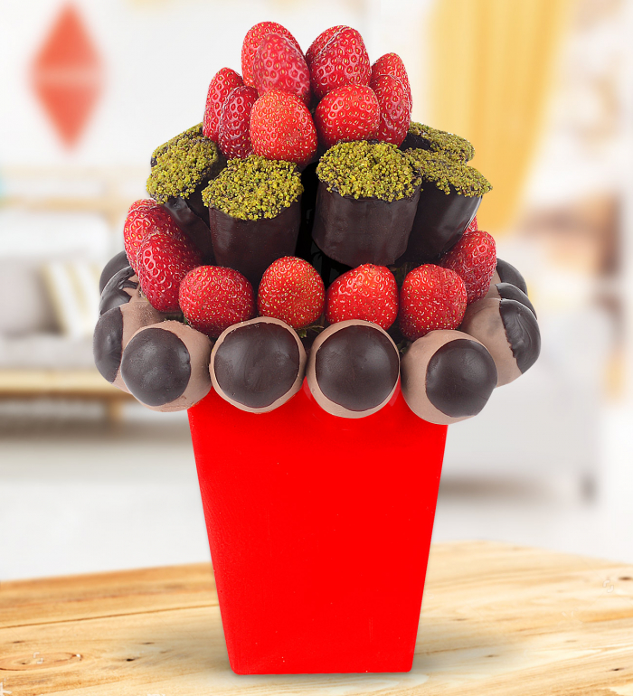
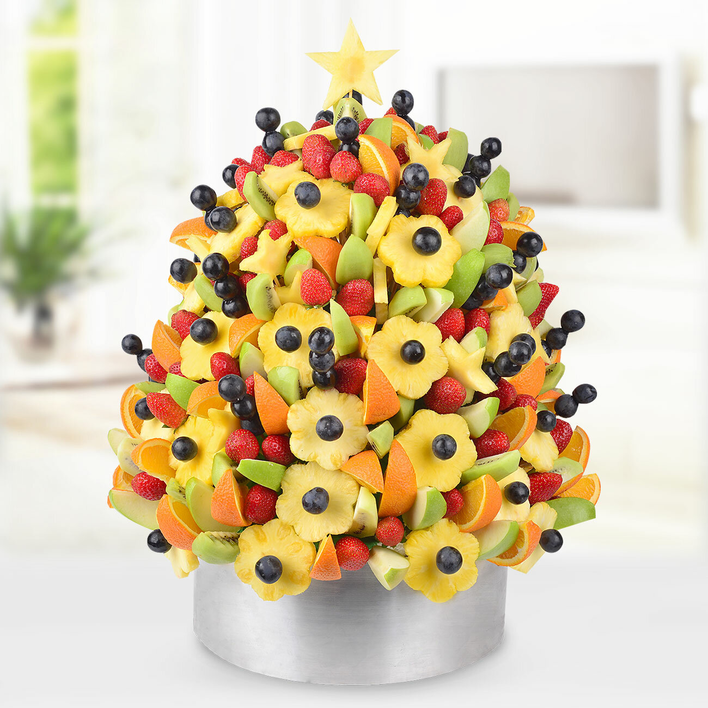

Şu an tabletinizi dikey kullanmaktasınız!
Daha iyi bir site deneyimi için
tabletinizi yatay olarak kullanabilirsiniz.
Şimdiye Kadar Duymadığınız, Görmediğiniz ve Yemediğiniz 18 Değişik Meyve
Öznur Doğan Takip Et 305 takipçi 391 içerikSıkça Yenen Konular
ŞAŞIR Minik Dostlarımız Aç Kalmasın Diye Ev Yapımı 6 Farklı Kedi Maması Ceren Sungur Ocak 4, 2016 ŞAŞIR Mardin'in Zenginliğiyle İnsanı Hayrete Düşüren Mutfağından 14 Efsane Lezzet Zeynep Çetin Ekim 18, 2016 Pepsi ile Lezzet Katacağınız Tarifler Pepsi Şubat 9 Ruffles ile Paylaşımlık Lezzetler Ruffles Ocak 28 YEMEK ŞAŞIR 26 Haziran 2015 FavorilerimeEkle
Birazdan tanışacağınız meyveleri yiyebilmek için ya çok zengin olup ithalatını yaptırmanız gerekiyor ya da gidip yerinde yemeniz. Aksi halde Türkiye sınırları içerisinde bu meyvelere rastlayabilme imkanınız çok düşük.
Hepsi birbirinden garip, "Ama ben bunun neresini yiyeceğim?" diye insanı arada bırakan tropikal meyveler. Ancak o kadar lezzetli ve yararlılarmış ki insan "Azıcık bize de gelin" demek istiyor.
Belki de görüntüsünü sevmediğiniz bir yiyeceğin ne kadar lezzetli olabileceği konusunda da tabu yıktırabilirler. Hazır olun, en tropik meyveler geliyor. En garip meyveler geliyor.
Ake
footbridgetothefeast
Ake meyvesiyle başlayalım ve biraz şaşırtalım. Aslında içinde birden fazla koca çekirdek ve yenilebilir kısım bulunuyor akenin. Eğer hangi kısım yeniliyor diye soruyorsanız maalesef ki o tombiş siyah noktalar değil, beyne benzeyen sarı kısımlar. Batı Afrika'ya has meyvelerden bir tanesi imiş.
Rambutan
wiki
Malay dilinde "tüylü" anlamına gelen rambutan meyvesine bir tür kestane diyebiliriz. Dış kabuğu soyulduğunda içinden bir topçuk şeklinde meyvesi çıkıyor. Beyaz renkli meyvenin tadı üzüme benzetiliyor. Güney Asya'nın en bilinen meyvelerinden bir tanesi.
Jabuticaba
wiki
Jabuticaba, dikildikten 20 yıl sonra meyve veren ağaç ve bu ağacın meyvesine verilen addır. Güney Amerika'nın en bilinen meyvelerinden birisidir. Meyvesi doğrudan gövdeden yetişir. Şarabı ve likörü de yapılıp servis edilir.
Kiwano
parade
Afrikan boynuzlu salatalık adıyla da bilinen kiwano, lezzet olarak hem salatalığa hem de kabağa benziyor. Bol lifli ve C vitaminli bir meyve. Dış görünüşü nedeniyle balon balığına da benzetildiği olmuş. Afrika'ya özgü meyvelerden bir tanesi. Kaşıkla ya da kafaya dikerek yeniyor.
Durian
kitchentablepassport
Güney Asya'da bolca yetiştirilip yenilen hatta bir diğer adı "meyvelerin kralı" olan durian, kocaman bir meyve. Dışında iğneye benzeyen çıkıntıları var, içinde ise bademsi bir yenilebilir kısım. Genellikle kokusu çok fazla sevilmiyor çünkü çürük soğan gibi kokuyor ancak kendisi pek tatlı bir meyveymiş. Yiyenler öyle diyor.
Miracle berry
tasteofthetopend
Kendisiyle sizleri daha önce tanıştırmıştık. İçerdiği bazı maddeler nedeniyle yenildikten belirli bir süre sonraya kadar ne yerseniz yiyin tatlı bir tat alıyorsunuz. Gerçekten adı gibi "mucize meyve". Merak edenleri yazımıza alalım: Yediğiniz Her Şeyin Tadını Tatlıya Çeviren Meyve: Miracle Berry
Mangostan
health-benefits-of-fruit
Mangosteen adıyla bilinen, kalın kabuğunun altında yumuşacık bir iç taşıyan meyvedir. Tadı şeftaliye benzetilir. Güney Asya'nın en sevilen meyvelerinden bir tanesidir. Açabilmek için genellikle kırmak ya da bıçakla kesmek gerekir.
Çerimoya
shockinglydelicious
Dünyanın en lezzetli meyvelerinden bir tanesi olan çerimoya, 20 cm uzunluğunda, 7-10 cm genişliğinde olabilir. Bu da aslında kocaman bir meyve olduğunu işaret ediyor. İçi beyaz ve etlidir, siyah çekirdeklere sahiptir fakat çekirdekleri zehirli olduğu için yenmez. Anavatanı Güney Amerika'dır fakat Asya'da da oldukça sık bulunur.
Aguaje
newworldreview
Amazonların en sevilen meyvesidir aguaje. Yenilebilmesi için kabuğunun soyulması gerekmektedir. A ve C vitamini bakımından oldukça büyük bir depodur. Fermente edildiğindeyse ortaya müthiş bir şarap çıkıyormuş. Yine deneyenler öyle söylüyor.
Jackfruit
wiki
Dünyanın en büyük meyvesi olarak da bilinen, ağaçta yetişirken 35 kg. ağırlığa kavuşabilen bir meyvedir. Özellikle Hindistan, Bangladeş, Tayland ve Vietnam'da görülür. Yapılan araştırmalara göre Bangladeş'te 6.000 yıl önce de bu meyve kullanılıyormuş. En bilinen yeme şekli ise kızarmış olarak servis etmekmiş.
Cupuaçu
celiachia
Çikolatalı ananas gibi tadı var desek cupuaçuyu anlatmak için doğru kelimeleri kullanmış oluruz. Amazon'da yetişen ve genellikle tatlı olarak tercih edilen bir meyve. Yapısı ise yağlı ve ince. Losyon olarak da kullanıldığı oluyormuş bu nedenle.
Wood Apple
migrationology.
Türkçe'ye çevirdiğimizde tahta elma gibi bir terimle karşılaşacağımız, aslında daha çok içi meyveyle dolu bir ceviz kabuğunu andıran yapısıyla "Bu da yenilir mi şimdi?" hissi yaratsa da afiyetle yenilir. Hindistan ve Sri Lanka'nın bilinen meyvelerindendir. Hindular tarafından kutsal görülen bir ağaçtır. Dışı oldukça sert olmasına rağmen içi çok yumuşak ve etlidir.
Salak
flickr
Bu isimde bir meyve olduğunu sizlere söylediğimiz için mutluyuz. Artık sulu şakalarda bulunabilirsiniz. Snake fruit yani yılan meyvesi olarak da bilinen salak, Java ve Sumatra'da oldukça sık rastlanan bir meyve. Bu meyve kardeş de ananasa benzeyen tadıyla öne çıkıyormuş.
Pitaya / Ejder meyvesi
vapeloungellc
Kaktüsün meyvesi olur da lezzetli olur mu? Tüm bu soruları geride bırakma vakti geldi. Çok leziz bir meyve var karşınızda. Anavatanı Meksika, Orta Amerika ve Güney Amerika'dır. Kalori yönünden oldukça düşük olan meyve içindeki minik siyah çekirdekler nedeniyle kiviye benzetilir. Garip görünüşünün altında bir güzel meyve yatar.
Liçi
letsjuice
İngilizcesi lychee olan bu meyve oldukça tatlı, oldukça lezzetlidir. Çin, Tayvan ve Güney Asya'da sıklıkla rastlanır. Böğürtlen ailesinden olan bu meyveceğizin içi beyaz ve yumuşaktır.
Santol
health-benefits-of-fruit
Pamuk meyve ya da ekşi elma olarak da bilinen santol, mangostana benzeyen bir diğer meyvedir. Mangostanın tadına göre daha ekşi bir tada sahiptir. Yine mangostanda olduğu gibi ortadan bıçakla bölünür, ortasında kalan kısımlar çekirdekleridir. İçi kaşıkla sıyrılarak yenir. Malezya, Sri Lanka ve Endonezya'da sıkça rastlanır.
Ekmek meyvesi
flickr
Adı gibi ekmek meyvesi. Görünüş olarak ekmeğe benzemese de lezzet olarak adeta bir patates, adeta bir ekmek. Bu nedenle kızartılarak, fırınlanarak ya da haşlanarak pişirilebiliyormuş. Nişasta bakımından zengin olması nedeniyle var olduğu topraklarda ekmek yerine de kullanılabilen bir meyve. Hint Okyanusu ve Büyük Okyanus çevresinde bulunuyor.
Çin koca yemişi
wiki
Çince yangmei olarak bilinen; Çin, Japonya, Tayland ve Kore'de sıkça rastlanılan bir meyvedir. Taze bir şekilde de yenebilir, fermente edilip likör haline de getirilebilir ya da kurutulabilir de. Yumuşak ve lezzetli bir yiyecektir.
Yemek.com'u Youtube'da takip etmeyi unutmayın!
Vallahi Bırakmayız, Bir Tabak Daha? Yazarlar Yazar Ol Hakkımızda İletişim Kullanım Koşulları Gizlilik ve Çerez Politikası KVK Aydınlatma Metni Yemek Tarifleri Sizden Gelenler Ye Öğren Keşfet Yetiştir İyi Yaşa İç Sözlük Atıştırmalık Bakliyat Börek Çorba Diyet Dünya Mutfakları Ekmek Et Hamur İşi Kahvaltılık Kek Köfte Kurabiye Makarna Meze Pasta Pilav Pizza Poğaça Pratik Yemek Ramazan Salata Sebze Sulu Yemek Tatlı Tavuk Yöresel Tarifler Zeytinyağlı TÜM YAZILARI GÖRMEK İÇİN TIKLAYINIZ... Rengi Gönülleri Fetheder: Pancarlı Krep Az Malzemeli: Şipşak Kek Kesip Yemeye Kıyamayacağınız: Portakallı Alt Üst Kek TÜM YAZILARI GÖRMEK İÇİN TIKLAYINIZ... Ülkemizin 7 Ayrı Bölgesinden Esinlenen Birbirinden Nefis 7 Atıştırmalık Lezzet Hafta Sonu Kahvaltısına Çok Yakışacak Az Malzemeli 10 Pratik Hamur İşi Tarifi Nefis Kıvamının Sırrı Burada Saklı: İrmik Helvası Şerbeti Nasıl Yapılır? TÜM YAZILARI GÖRMEK İÇİN TIKLAYINIZ... Hiç Zor Değil: Poğaçaların Yumuşak Olması İçin Ne Yapılır? Neden Bazı Kurabiye Tariflerinin Tereyağı, Bazılarında Sıvı Yağ Kullanırız? Bilinmesi Gerek: Turşunun Üzeri Neden Beyazlar? Nasıl Önlenir? TÜM YAZILARI GÖRMEK İÇİN TIKLAYINIZ... Siz Ne İçmek İsterseniz O: Soulmate Coffee Özgürlüğün Tadını Çıkaran Freelance Çalışanlara Özel 10 Mekan Vegan ve Vejetaryenlerin Uğrak Noktası Olacak Kadıköy’deki 6 Nefis Mekan TÜM YAZILARI GÖRMEK İÇİN TIKLAYINIZ... Bu Adım Sayesinde Uzun Yıllar Sağlıkla Büyütmek Mümkün: Salon Çamı Bakımı Nasıl Yapılır? Doğal Bir Stres Savar Olarak Anılan Limon Otunun Merak Uyandıran Faydaları ve Kullanımı Güçlü Antioksidan Özelliği Sayesinde Faydaları Saymakla Bitmeyen Bir Bitki O: Kocayemiş TÜM YAZILARI GÖRMEK İÇİN TIKLAYINIZ... Uyku Düzeni ve Beslenme "Sebze Yemekten Sıkıldım" Diyenlere Tavsiyeler Porsiyon Kontrolünde Tabak Seçimi TÜM YAZILARI GÖRMEK İÇİN TIKLAYINIZ... Vücudu Toksinlerden Temizlerken Zayıflamaya da Yardımcı Olan Lezzetli İçecek: Aronya Çayı Dört Mevsim Mutfaktan Eksik Edilmemesi Gereken Şifa Kaynağı: Nar Çiçeği Şerbeti Nasıl Yapılır? Kombucha Nedir: Faydaları Nelerdir, Zararları Var Mıdır? TÜM YAZILARI GÖRMEK İÇİN TIKLAYINIZ... Limon Tuzu Hurma Sirkesi Kırmızı Şarap Sirkesi TÜM YAZILARI GÖRMEK İÇİN TIKLAYINIZ... Yazarlar Hakkımızda İletişim Kullanım Koşulları Gizlilik ve Çerez Politikası Facebook Twitter Instagram Pinterest Googleplus- 14 Şubat Sevgililer Günü Çiçek Meyve Sepeti Hediyesi ...
- Yüksek Kaliteli Lezzetli Meyve Üreticilerinden ve Lezzetli ...
- Lezzetli Buket Çiçek Meyve Kek Kurabiye Sepeti
- Aydeniz Sebze & Meyve
- Tropikal Meyveler: Tropik Bölgelerden 18 Farklı Meyve ...
- Meyve Sepeti Taptaze Meyva Çiçek Sepeti Meyve Sepetleri
- Lezzetli Sepet
- Meyve Sepeti meyvesepeti.com’dan alınır.
- Tatlı Meyve - Lezzetli Buketleri ile Sevginizin Yeni Tarifi
- Aşk Meyve Sepeti | Meyve Lezzetleri
- 14 Şubat Sevgililer Günü Çiçek Meyve Sepeti Hediyesi ...
Çiçek hazırlanmış gibi Sepet ve Lezzetli Buketler Tatlı Meyve de. Taze ulaştırma garantisi ve Lezzetli Hediyeler ile Özel Günlerde Sevdiklerine Tatlı Gönder.
- Yüksek Kaliteli Lezzetli Meyve Üreticilerinden ve Lezzetli ...
Birbirinden lezzetli meyveler ve meyve sepeti ürünleri sizleri bekliyor. Aynı gün adrese teslim.
- Lezzetli Buket Çiçek Meyve Kek Kurabiye Sepeti
Meyve sepeti konseptinin öncüsü meyvesepeti.com'da birbirinden lezzetli ürünler sizleri bekliyor. Hemen sipariş verin, aynı gün teslim edelim.
- Aydeniz Sebze & Meyve
Sağlıklı, Lezzetli ve Güvenilir Aydeniz Sebze ve Meyve olarak müşterilerimize yılın her mevsiminde taze meyve ve sebze sunmak için özverili bir şekilde çalışıyoruz. Üreticilerimiz ile tüketicilerimiz arasında kurduğumuz köprüyü ürün ve hizmetin en kalitelisini sunmak için kullanıyoruz.
- Tropikal Meyveler: Tropik Bölgelerden 18 Farklı Meyve ...
Lezzetli Hediye, sevdiklerinizi mutlu etmek ve onlara değerli olduklarını hissettirmek için tercih edebileceğiniz şirin ve lezzetli hediyeler satın alabileceğiniz kaliteli bir sitedir. Meyve sepetinde hazırlanan lezzetli meyve ve çikolata karışımı sepetler, sevdiklerinizin hem damak zevkini hem kalplerini okşayacak cinsten.
- Meyve Sepeti Taptaze Meyva Çiçek Sepeti Meyve Sepetleri
Lezzetlibuket.com en güzel lezzetli hediye, çiçek sepeti, meyve sepetleri, kek buketi, kurabiye sepeti, doğum günü hediyeleri, sevgiliye hediye, hediye gönder
- Lezzetli Sepet
Meyve sepeti en yaygın şube ağıyla Lezzetliçiçek de çiçek hediye sepeti şeklinde. En taze meyveleri sizler için özenle seçtik. Sade ya da çikolata kaplı meyvelerle bezenmiş hediye sepeti çikolatasepeti haline getirip sevdiklerinize özel olarak hazırlıyoruz.
- Meyve Sepeti meyvesepeti.com’dan alınır.
Lezzetli Hediye.com meyve sepeti, kek buketi, sevgiliye hediye, doğumgünü pastası, yeni doğan bebek, anneler günü hediyesi Türkiye gönderen en yaygın servis!
- Tatlı Meyve - Lezzetli Buketleri ile Sevginizin Yeni Tarifi
Lezzetli meyve armut sahne illüstrasyon illustration design hakkında daha fazla bilgi edinin, bu resim formatı PSD, lovepik numarası 400203357, kullanım sahnesi , boyut 3.9 MB. Web ve mobil arayüzlerde, reklam tasarımında ve baskı tasarımında kullanabileceğiniz yaklaşık 100.000 vektör çizim kaynağını, proje tasarımınızı ...
- Aşk Meyve Sepeti | Meyve Lezzetleri
Lezzetli Çiçek .com sevdiklerinize ciçek sepeti, meyve sepeti, kek buketi, sevgiliye hediye, doğum günü pastası, yeni doğan bebek hediyeleri Türkiye gönder
Çiçek hazırlanmış gibi Sepet ve Lezzetli Buketler Tatlı Meyve de. Taze ulaştırma garantisi ve Lezzetli Hediyeler ile Özel Günlerde Sevdiklerine Tatlı Gönder.
Birbirinden lezzetli meyveler ve meyve sepeti ürünleri sizleri bekliyor. Aynı gün adrese teslim.
Meyve sepeti konseptinin öncüsü meyvesepeti.com'da birbirinden lezzetli ürünler sizleri bekliyor. Hemen sipariş verin, aynı gün teslim edelim.
Sağlıklı, Lezzetli ve Güvenilir Aydeniz Sebze ve Meyve olarak müşterilerimize yılın her mevsiminde taze meyve ve sebze sunmak için özverili bir şekilde çalışıyoruz. Üreticilerimiz ile tüketicilerimiz arasında kurduğumuz köprüyü ürün ve hizmetin en kalitelisini sunmak için kullanıyoruz.
Lezzetli Hediye, sevdiklerinizi mutlu etmek ve onlara değerli olduklarını hissettirmek için tercih edebileceğiniz şirin ve lezzetli hediyeler satın alabileceğiniz kaliteli bir sitedir. Meyve sepetinde hazırlanan lezzetli meyve ve çikolata karışımı sepetler, sevdiklerinizin hem damak zevkini hem kalplerini okşayacak cinsten.
Lezzetlibuket.com en güzel lezzetli hediye, çiçek sepeti, meyve sepetleri, kek buketi, kurabiye sepeti, doğum günü hediyeleri, sevgiliye hediye, hediye gönder
Meyve sepeti en yaygın şube ağıyla Lezzetliçiçek de çiçek hediye sepeti şeklinde. En taze meyveleri sizler için özenle seçtik. Sade ya da çikolata kaplı meyvelerle bezenmiş hediye sepeti çikolatasepeti haline getirip sevdiklerinize özel olarak hazırlıyoruz.
Lezzetli Hediye.com meyve sepeti, kek buketi, sevgiliye hediye, doğumgünü pastası, yeni doğan bebek, anneler günü hediyesi Türkiye gönderen en yaygın servis!
Lezzetli meyve armut sahne illüstrasyon illustration design hakkında daha fazla bilgi edinin, bu resim formatı PSD, lovepik numarası 400203357, kullanım sahnesi , boyut 3.9 MB. Web ve mobil arayüzlerde, reklam tasarımında ve baskı tasarımında kullanabileceğiniz yaklaşık 100.000 vektör çizim kaynağını, proje tasarımınızı ...
Lezzetli Çiçek .com sevdiklerinize ciçek sepeti, meyve sepeti, kek buketi, sevgiliye hediye, doğum günü pastası, yeni doğan bebek hediyeleri Türkiye gönder
 